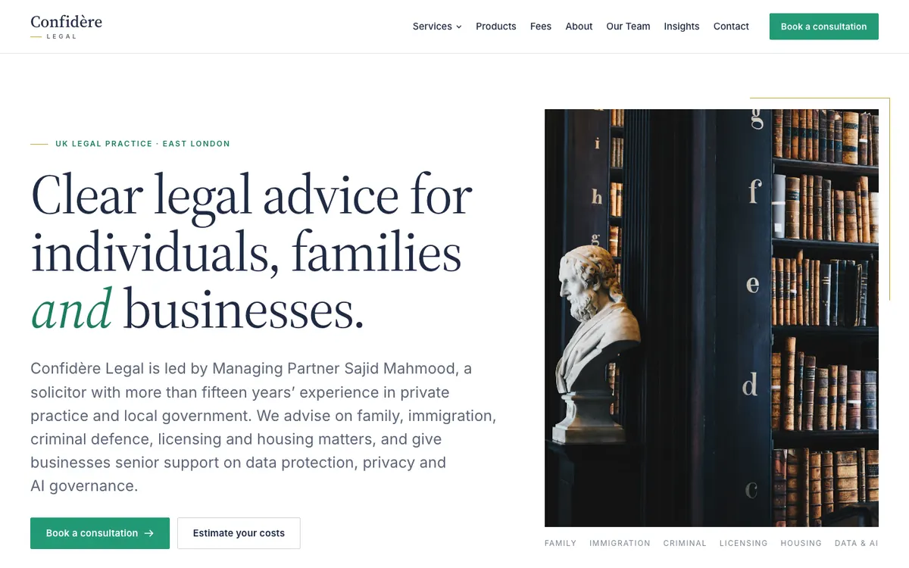
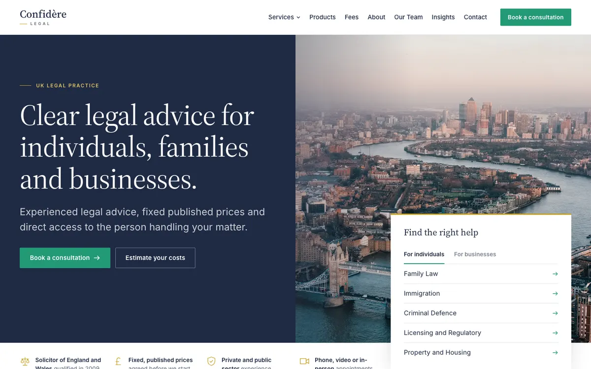
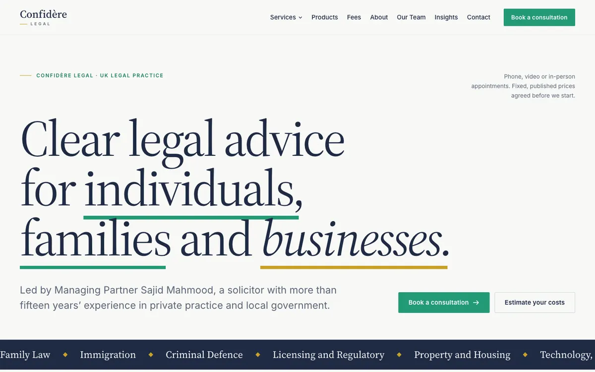
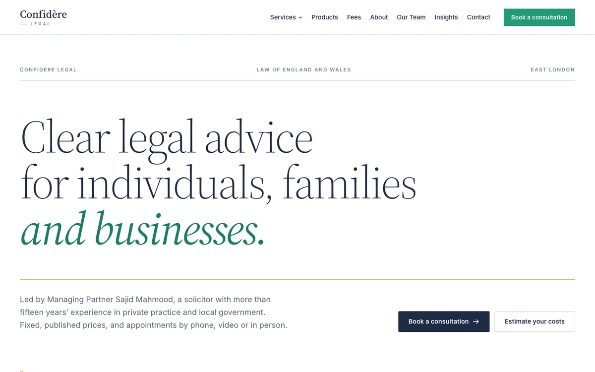
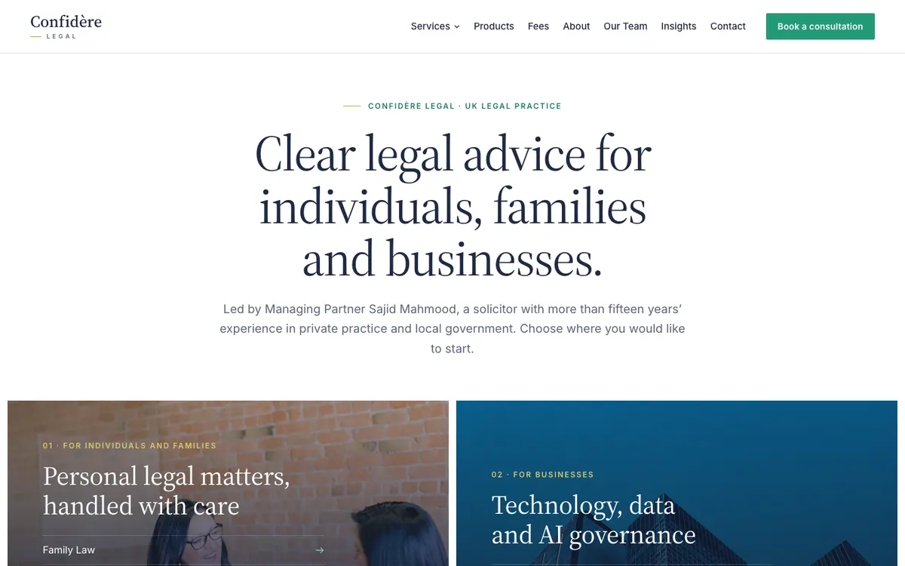
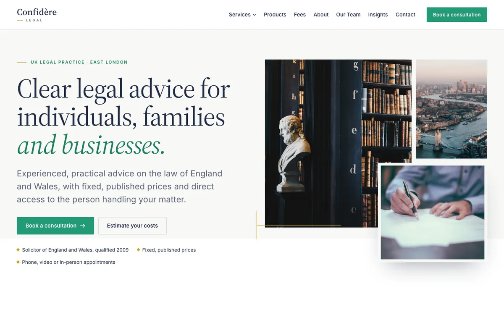

ConfidèreLegal
Homepage design options
Seven directions for the Confidère Legal homepage. They share the same brand colours, typography, navigation, content and regulatory footer. What changes is the composition and the mood. Choose one, or combine elements, and we will build the full site in that direction.
- Highlighted text marks content that needs confirming before launch.
- Photography is temporary stock, to be replaced by approved images.
- Inner pages are built after a direction is chosen.

Design 1 Editorial Calm, content-led and closest to the A&O Shearman reference. A serif-first hero, practice areas set as an editorial index that reveals imagery on hover, and a navy business band. View design Design 2 Counsel Classic and architectural. A full-screen hero with a background video, photographic practice tiles and a roman-numeral process. View design
Design 3 Corporate Practical and guided. A split hero with a “find the right help” panel and a tabbed practice-area explorer. View design
Design 4 Modern Grid Contemporary and confident. Oversized type, a service marquee, a bento grid and large key facts. View design
Design 5 Typographic Restrained and book-like. Type does the work: a contents-style services list, one panoramic image and minimal ornament. View design
Design 6 Two Paths Audience-first. The hero splits into two large panels, one for individuals and families and one for businesses, so visitors choose their route straight away. View design
Design 7 Spotlight Warm and editorial. A photo collage hero, a scrolling carousel of practice areas, a quote from the Managing Partner and process cards that stack as you scroll. View design